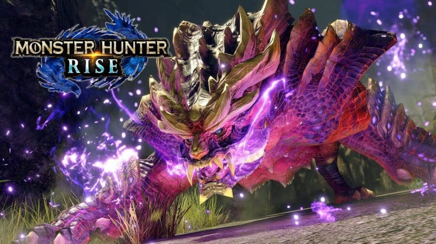
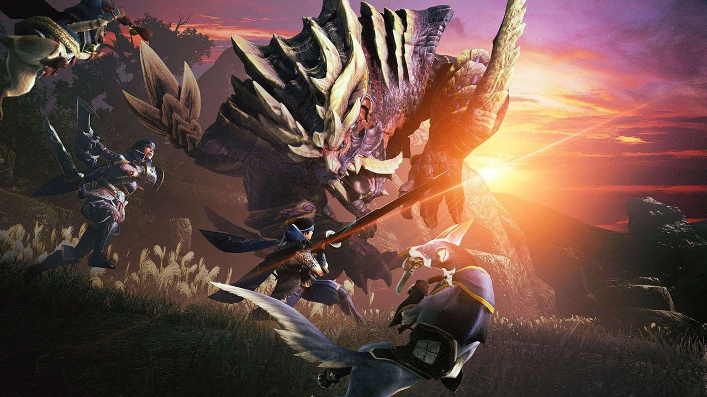

Preparem-se, caçadores! Monster Hunter Rise pode chegar ao PS4 e PS5 em 2023
Segundo o insider The Snitch, o anúncio oficial pode acontecer durante o The Game Awards no dia 8 de dezembro
Monster Hunter se tornou uma das franquias mais rentáveis da Capcom nos últimos anos e obteve sucesso em todas as plataformas. O último projeto da série, Monster Hunter Rise, chegou apenas ao Nintendo Switch e ao PC. Agora, o game também pode estrear no PS4, PS5, Xbox One e no Xbox Series X|S em 20 de janeiro.
Quem afirma isso é o insider The Snitch, em reportagem publicada no Insider Gaming. Segundo o insider, famoso no Twitter pelas suas charadas que antecipam grandes notícias dos games, a Capcom planeja lançar o jogo base na data mencionada acima, com a expansão “Sunbreak” prevista para chegar no outono brasileiro.
"Sim, isso mesmo, o jogo de sucesso da Capcom, Monster Hunter Rise, chegará ao Xbox Series X|S, Xbox One, PlayStation 5, PlayStation 4 e PC em 2023 e também estará disponível no Game Pass […] em 20 de janeiro, bem como o lançamento da expansão na primavera [outono brasileiro] de 2023".
Ainda de acordo com a reportagem, Monster Hunter Rise supostamente rodará em 4K e 60 FPS na nova geração. Suporte ao áudio 3D e ao DualSense também estariam inclusos no pacote.
Monster Hunter Rise não foi confirmado oficialmente nos consoles de nova geração
Mesmo que o insider seja uma fonte de boa credibilidade, nenhuma das informações acima foram confirmadas pela Capcom. Portanto, trate o texto com cautela.
Fonte:MeuPlastation